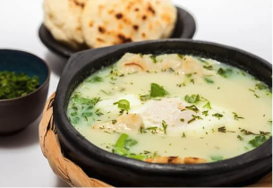

Esta preparación tradicional es del Altiplano Cundiboyacense. La zona tiene un clima frío, por lo que este caldo caliente es ideal para las mañanas frías. Se dice que nació en la tribu Chibcha de la región Andina. La receta se ha transmitido de generación en generación. Aunque muchos creen que la tradición se está perdiendo, el plato sigue vigente. Los ingredientes son agua hervida, leche, huevo, cebolla, calado y cilantro. Generalmente, se sirve con tajadas de pan y mantequilla. Sin embargo, cada familia tiene sus propias variaciones. Algunas añaden papas u otros ingredientes a su gusto.
